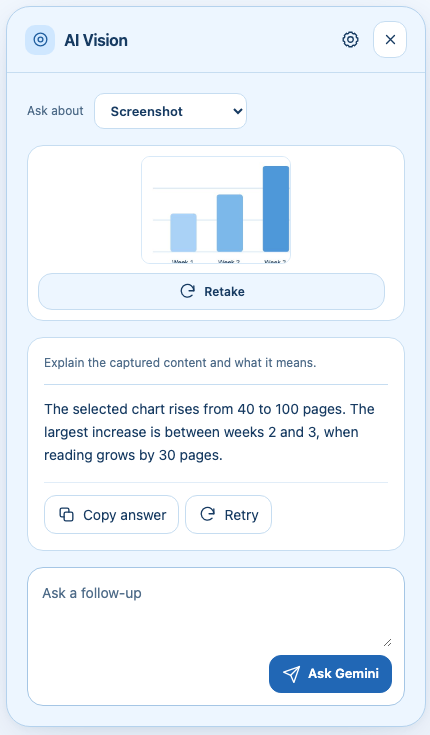

How to explain a screenshot with AI Vision
By AI Vision project · Updated
To explain an image in Chrome, select the relevant area in AI Vision and choose Explain screenshot. Gemini returns a plain-language answer you can refine with a follow-up question.
Capture the detail that matters
First, get a Gemini key and save it in AI Vision. Open a supported webpage and use the toolbar icon or Alt + Shift + V to open the extension.
- Choose Screenshot, then press Select an area. If you enable Explain automatically in Settings, this button reads Select & explain.
- Drag across the relevant content. Include labels and units for a chart, or the complete text of an error. Press Escape or choose Cancel to return without changing your earlier capture.
- Check the compact preview. Retake it if text is cut off or too small.
- In the default One-tap Explain mode, choose Explain screenshot. Open Ask something specific when your question needs a particular angle.
- Use More actions for Summarize or Extract text. Check the answer against the image, then use the follow-up field to clarify one point.

Worked example: explain a reading chart
Imagine a chart with weekly totals of 40, 60, 90, and 100 pages read. Capture the bars and their week labels, then ask:
“Which week had the biggest increase? Use the numbers shown and explain the calculation.”
Illustrative answer: The biggest increase is from week 2 to week 3: 90 − 60 = 30 pages. Week 4 has the highest total, but its increase is only 100 − 90 = 10 pages.
This distinction makes a better question than “What is this?” The highest total and the largest increase are different things. Follow up with “What would you need to know before calling this a lasting trend?” to surface missing context.
Extract text from an image
Use Extract text under More actions when a page shows text as an image. This asks Gemini to extract visible text; use Copy answer to put the result on your clipboard.
“Transcribe the visible text in reading order. Preserve names, numbers, and punctuation. Mark unreadable words instead of guessing.”
Check every important number or name. AI text extraction can make mistakes, especially with handwriting, small type, or low contrast.
Understand an error message
Capture the full message with enough surrounding context to identify the affected feature. Ask for an explanation before asking for a fix:
“Explain this error in plain English. List two checks I can make without changing settings or running commands.”
If the capture does not work
- Blurry or missing text: enlarge the page content, then select a tighter area with all relevant labels.
- Nothing selected: drag a visible rectangle. A click or cancelled selection is not a captured image.
- Restricted page: try a normal HTTP or HTTPS webpage. Chrome internal pages and the Chrome Web Store cannot be captured by this workflow.
- Key or quota error: use the Gemini setup troubleshooting steps.
Choose a different context when it helps
A screenshot is useful for a visual detail. For an entire article, summarize the webpage instead. If you only need editable words, follow the screenshot text extraction guide. For information spread across sources, compare Chrome tabs. Your selected screenshot and question are sent to Google for the response; review the privacy notice before sharing sensitive content.